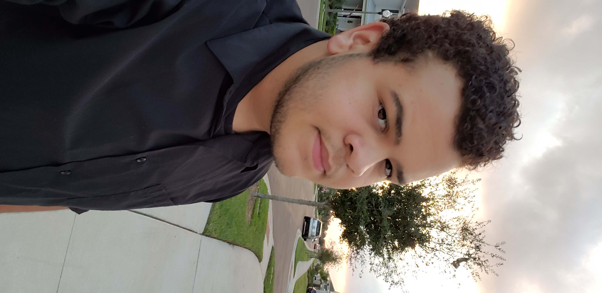

About Me
My name is Akili James Kenneth McMackin, I'm 19 years old. I was born on October 20th, 1999, in Richmond Virginia. During my childhood, I explored a lot of my passions and found that I very much enjoyed music, and video games. In 2011, I moved to Apopka Florida, and attended middle school. During my attendance at middle school, I would further grow my love for music, and eventually devoting more time to my guitar playing, which would become my main instrument. In high school, I would end up attending virtual school.
Virtual school was quite different from any other form of learning that I had been subject to at the time, it was an interesting experience. By the end of high school, I would graduate from Lake County Virtual School, as magna cumlaude. Soon after graduation, I was seeking for a way to support my music finacially, and for a skill that I could learn for a stable job.
That is where I found out about the UCF coding boot camp, and after researching the art of coding, I would become very interested in the subject. I enrolled, and about a year later, I would find myself in this course.